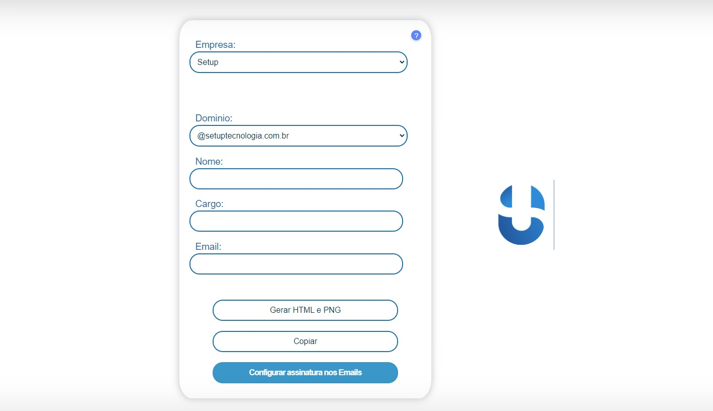
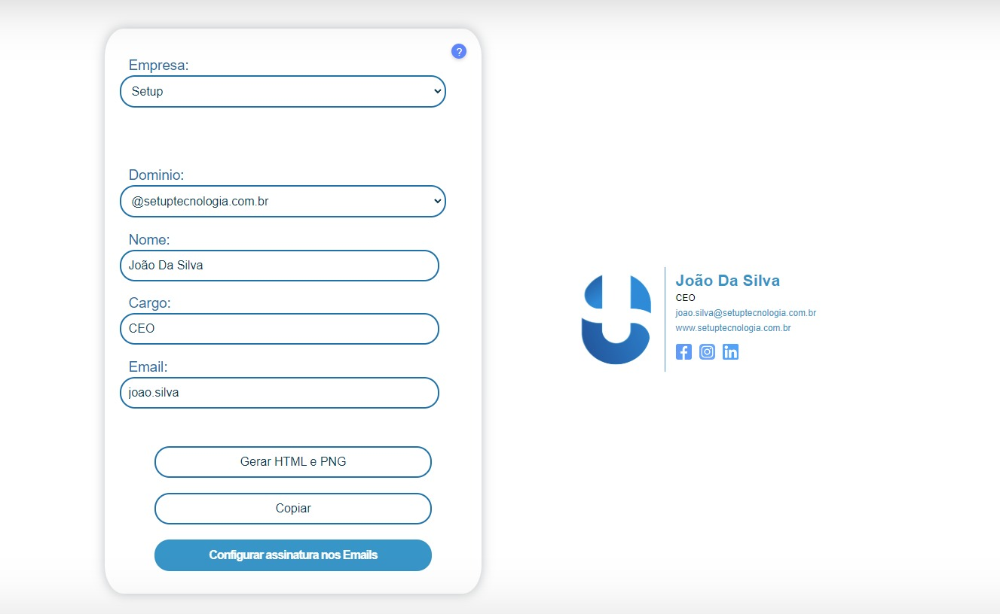
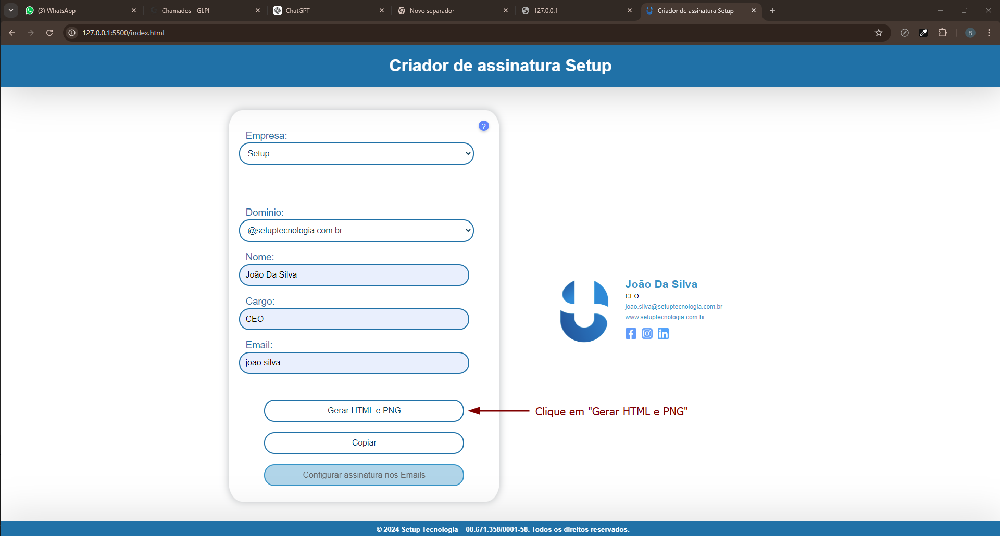
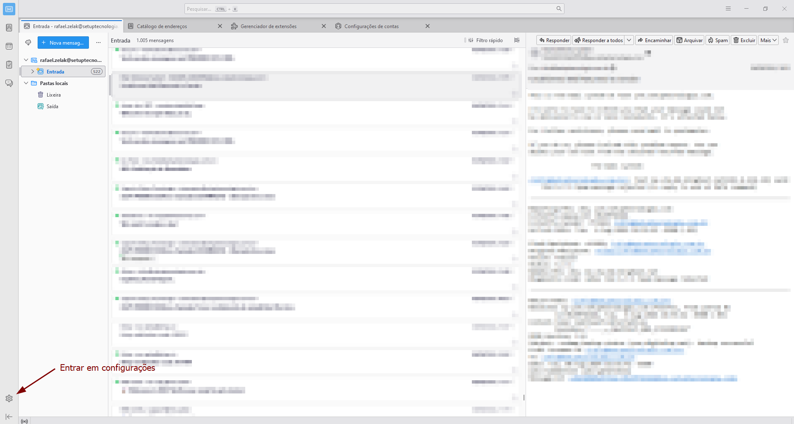
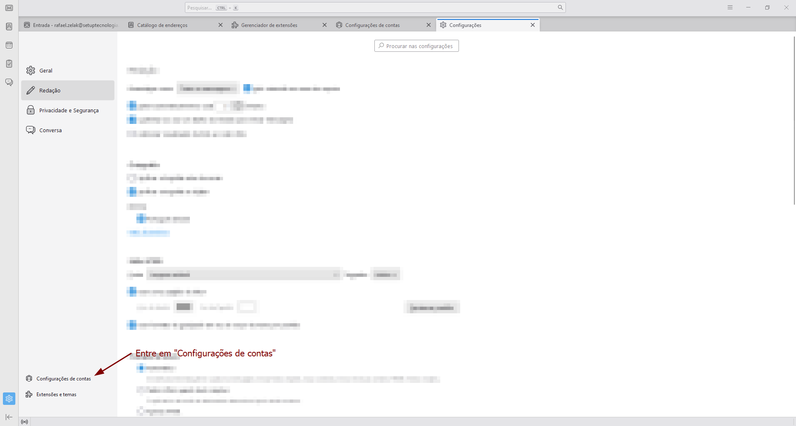
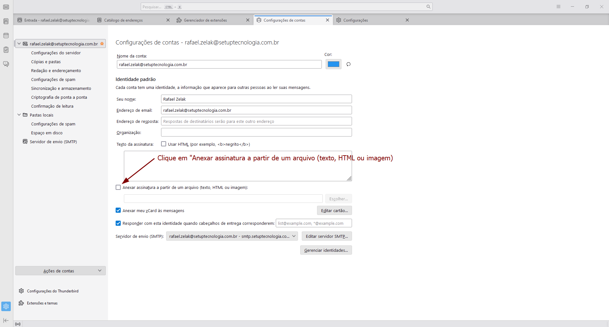
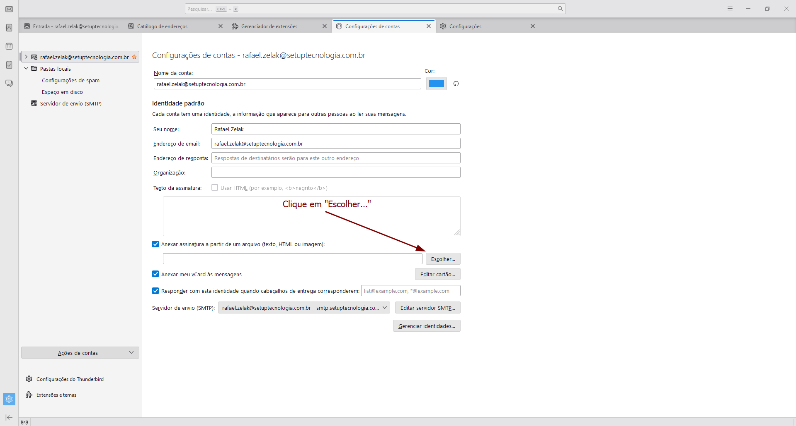
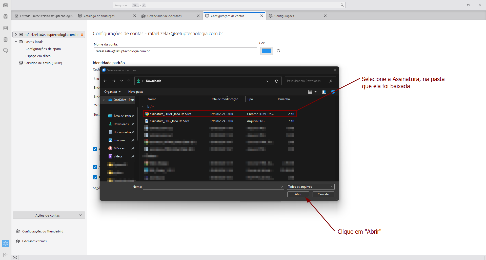
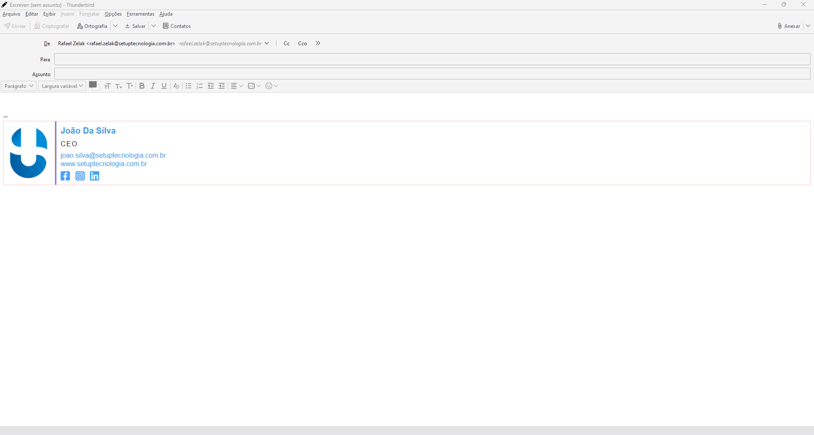

Tutoriais
Para criar a assinatura primeiramente você seleciona a empresa e o domínio:

Após isso coloque suas informações (Nome, Cargo, Email):

Neste momento, aparecerá no lado direito uma pré visualização de como ficará sua assinatura
Agora basta clicar em "Gerar HTML e PNG" ou "Copiar" e seguir os proximos tutoriais para enexar nos provedores de Email!
Para os seguintes provedores:
- Thunderbird
- Outlook
- Gmail
Siga os proximos tutorias, para outros provedores, entre em contado com o suporte!
Seguindo a partir do tutorial "Como criar assinatura"


Agora com o Thunderbird aberto, vamos entrar no menu de configurações

Após entrar em configurações entre em "configurações de contas"



Note que caso você tenha permitido a trnsferência de multiplos arquivos (como mostrado na imagem 2) aparecerão 2 arquivos, selecione o arquivo HTML(O arquivo que não é uma imagem)

E pronto, agora ao começar a escrever um novo email, a assinatura já estará anexada!
